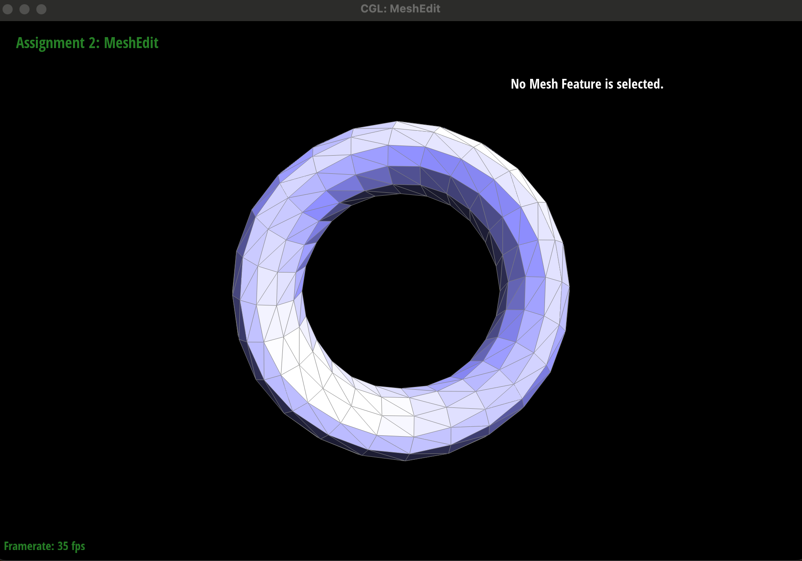

CS184/284A Spring 2025 Homework 2 Write-Up
Link to webpage: Webpage
Link to GitHub repository: GitHub

Overview
For Homework 2, I implemented several key components of a geometry processing pipeline using the half-edge mesh data structure. These included Bezier curve evaluation with De Casteljau’s algorithm, Bezier surface evaluation with a separable 1D approach, and fundamental mesh editing operations like edge flips and edge splits. I also implemented area-weighted vertex normals to enable smooth shading and finished by developing the full Loop subdivision algorithm to progressively smooth triangle meshes.
Through this project, I gained hands-on experience with recursive algorithms, 3D interpolation, and the intricacies of maintaining a consistent half-edge structure during mesh manipulation. Debugging mesh connectivity issues taught me to think visually and structurally. In the later stages, I also explored the importance of preprocessing (e.g., edge flipping/splitting) to improve the behavior and symmetry of subdivision results, especially on meshes like the cube.
Overall, this homework gave me a deeper appreciation for the mathematical foundations of graphics, and how algorithmic mesh manipulation underpins smooth rendering, animation, and real-time simulation in modern computer graphics.
Section I: Bezier Curves and Surfaces
Part 1: Bezier Curves with 1D de Casteljau Subdivision
De Casteljau’s algorithm is a recursive method for evaluating Bezier curves at a given parameter t, where t ranges from 0 to 1. The algorithm works by repeatedly linearly interpolating between each pair of adjacent control points to generate a new set of intermediate points. This process continues until only a single point remains. That final point lies on the curve at the parameter t.
To implement this, I completed the function BezierCurve::evaluateStep(...) in student_code.cpp. It performs a single step of the algorithm by looping through the given control points and computing (1 - t) * pi + t * pi+1 for each consecutive pair of points. These intermediate points are returned as a new vector, which is then used for the next level of evaluation.
Custom 6-Point Bezier Curve
I created a custom Bezier curve file named wave6.bzc with the following 6 control points:
6
0.000 0.000 0.167 0.750 0.333 0.250 0.500 0.900 0.667 0.300 1.000 0.000
Subdivision Steps (Level-by-Level Screenshots)
Below are screenshots taken at each level of the recursive evaluation, ending with the final evaluated point:
Modified Curve (Dragged Points and Different t)
Below is a screenshot after moving some of the control points with the mouse and adjusting the parameter t using the scroll wheel. This demonstrates the curve's responsiveness to both the geometry and the evaluated parameter.
Part 2: Bezier Surfaces with Separable 1D de Casteljau
De Casteljau’s algorithm can be extended from 1D Bezier curves to 2D Bezier surfaces using a separable approach. A Bezier surface is defined by a 2D grid of control points, and is evaluated at a pair of parameters (u, v). To evaluate the surface at these parameters, we first treat each row of the grid as a 1D Bezier curve and evaluate it at u, producing a column of intermediate points. We then treat that resulting column as another Bezier curve and evaluate it at v. The final result is the point on the Bezier surface at (u, v).
To implement this, I completed three functions in student_code.cpp. In evaluateStep, I performed a single level of 3D linear interpolation between consecutive points using the formula (1 - t) * pi + t * pi+1. In evaluate1D, I repeatedly called evaluateStep until only one point remained. Finally, in evaluate, I evaluated each row of the control point grid at u to get a set of intermediate points, then evaluated that result at v to get the final point on the surface.
Below is a screenshot of bez/teapot.bez rendered using my implementation of Bezier surface evaluation:
Section II: Triangle Meshes and Half-Edge Data Structure
Part 3: Area-Weighted Vertex Normals
To compute area-weighted vertex normals, I used the Vertex::normal() function. The idea is to loop over all triangles adjacent to a vertex and compute the normal of each triangle by taking the cross product of two of its edges. These normals are then weighted by the area of their respective triangles (which is proportional to the magnitude of the cross product). I accumulated these weighted normals, then normalized the result to obtain the final unit vertex normal.
This method produces smoother lighting across surfaces compared to flat shading, especially on curved models like the teapot. By pressing Q in the viewer, I was able to toggle between flat shading and smooth shading using my implemented vertex normals.
Teapot Mesh Comparison
Flat Shading
Smooth Shading with Area-Weighted Normals
Part 4: Edge Flip
To implement the edge flip operation, I followed the diagram of two adjacent triangles and rewired all the associated halfedges, vertices, edges, and faces. I used the Halfedge::setNeighbors() method to reassign the connectivity of each half-edge cleanly. This approach ensured that every pointer was reassigned correctly while keeping the structure consistent.
One helpful debugging trick was printing out all the IDs and addresses of half-edges before and after the flip to verify that nothing was lost or corrupted. I also used the check_for(...) utility provided to trace down which elements were referencing each other, which helped me catch bugs where pointers weren’t fully updated.
Original Teapot
After First Edge Flip
After Second Edge Flip
During debugging, I accidentally flipped a boundary edge, which caused a crash. I added a check using isBoundary() to prevent this. I also found that flipping the same edge multiple times helped me identify bugs with inconsistent twin assignments. After fixing that, I was able to flip multiple edges across the mesh with no visual artifacts.
Part 5: Edge Split
To implement the edge split operation, I first checked whether the selected edge was on the boundary, and if so, immediately returned (since boundary splitting was not implemented). For internal edges, I followed the half-edge mesh data structure's conventions and created new mesh elements: one new vertex at the midpoint of the edge, several new halfedges, and two new faces. I carefully updated all relevant pointers using Halfedge::setNeighbors to maintain the mesh structure.
The new vertex's position was set to the average of the two vertices defining the original edge. I also ensured that each new element pointed to its appropriate neighbors and that all existing elements involved had their pointers updated as needed.
Debugging involved carefully labeling each element and drawing out the pre- and post-split mesh structure by hand. This helped ensure that I didn’t miss any pointer updates. Verifying the split by visually checking the mesh in the GUI and combining flips and splits in different orders helped validate the implementation.
Note: I did not implement support for boundary edge splits. The function exits early if a boundary edge is selected.
Screenshots
1. Mesh Before Edge Splits
2. Mesh After Several Edge Splits
3. Mesh After Combination of Edge Flips and Splits
Part 6: Loop Subdivision
Implementation Overview
I implemented Loop subdivision following the standard 5-step approach.
First, I computed the new vertex positions for all original vertices using the Loop averaging rule. These were stored in the newPosition attribute of each vertex, with old vertices marked as isNew = false.
Next, I computed the new vertex positions for each edge midpoint and stored these in Edge::newPosition. I handled this by using the formula:
newPos = 3/8 * (v0 + v1) + 1/8 * (v2 + v3),
where v0 and v1 are the endpoints of the edge, and v2, v3 are the two opposite neighbors.
After that, I split each original edge by counting how many old edges were present before the split loop, then stopped once that many had been processed. The midpoint vertex created during splitting received the previously computed newPosition.
Then, I flipped all new edges connecting one old and one new vertex to restore valid triangle topology.
Finally, I updated all vertex positions by copying the stored newPosition into position.
Debugging Notes
A key debugging trick was to avoid modifying the mesh while iterating over it directly. I stored the number of edges before splitting and broke the loop once all original edges had been split. Also, marking isNew flags correctly was essential for ensuring only the appropriate edges were flipped.
Results: Loop Subdivision Behavior
Here are the results of running multiple Loop subdivision steps on various meshes.
Sharp Corners and Edges
After Loop subdivision, sharp corners and edges tend to smooth out quickly. This is due to the weighted averaging during position updates. The more subdivision levels applied, the more rounded and smooth the original shape becomes.
Before Loop Subdivision
After Loop Subdivision - Level 1
After Loop Subdivision - Level 2
After Loop Subdivision - Level 3
Cube Subdivision Asymmetry
When applying Loop subdivision to dae/cube.dae, the cube becomes asymmetrical after a few iterations. This happens because the original cube mesh has uneven face triangulation, causing the averaging rule to create bias in vertex movement.
Before Subdivision (Cube)
After Subdivision
After Another
After Pre-Process
Notes on Cube Subdivision
After performing several Loop subdivision steps on cube.dae, the cube becomes smoother and rounder. Sharp corners and edges are gradually lost as the mesh smooths out.
Repeated subdivision causes visible asymmetry in the shape. This is due to the original triangle layout of the cube, where some diagonal edges on square faces are oriented differently than others.
Explanation of Asymmetry Fix
The asymmetry occurs because some cube faces are triangulated with different diagonal directions. Loop subdivision depends on mesh connectivity, so inconsistent edge orientation leads to uneven smoothing.
To reduce this effect, I manually flipped diagonal edges on the cube faces to make their orientation consistent. I also split long or uneven edges to create more uniform triangle sizes. This preprocessing helped make the subdivision result more symmetric by standardizing the mesh structure before applying the algorithm.